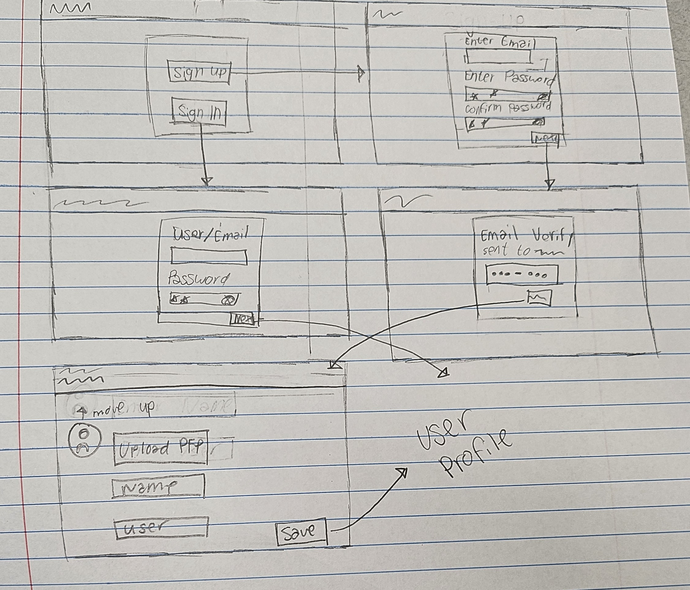

Kain Na!
A recipe app designed to help Filipino Americans reconnect with their culture through home cooked meals. Our team set out to answer one question: how can we connect Filipino Americans back to their culture? Through interviews, we learned that food carries family, nostalgia, and belonging, so we designed an experience that makes cultural recipes easier to find, follow, and keep
-
Phase 0
Understanding the Challenge
Goal: Learn what home cooked meals meant to Filipino Americans and other young adults tied to their culture.
What I did: With one of my teammates, I developed our interview protocol and we each ran 2 semi-structured interviews. We focused on speaking to college students about their family recipes, tradition, authenticity, homesickness, and challenges learning new dishes to cook at home. As a team, we synthesized our findings into an affinity map and created key pain points to guide our design decisions.
What we found:- Food is a way to connect with family and culture.
- Recipes are so often passed down verbally or by watching, so many details get lost or forgotten when it isn't written down.
- Cooking unfamiliar dishes feels overwhelming, and many people would rather watch how it's done instead of just reading about it.
- A seemingly simple recipe can vary from family to family, so just any recipe won't do if they want the one they grew up with.
- Hard-to-find ingredients and unclear substitutions are a recurring barrier
I'm not trying to make the best dish, I'm trying to replicate what my mom and grandma's food tastes like.

-
Phase 1
From Insights to Features
Goal: Decide what the app needs to do based on what we heard.
What we did: After creating our affinity diagram, we took each of the pain points and chose key features we wanted to include in order to adddress them. Increasing cooking confidence led us to create clear, visual recipe layouts. Uncommon ingrediants introduced the idea of a glossary to show potential alternatives. Family history became a key point to bring everything back to the culture, but not making it an obstacle to the recipe.
-
Phase 2
Mapping the Sign-Up/Sign-In Flow
Goal: Make getting into the website simple and welcoming.
What I did: I created the initial user flow diagram for the sign-up/sign-in and create profile processes. I started off with the user flow in Figma before creating hand-drawn low-fidelity mockups.

-
Phase 3
Mid-fidelity and Hi-fidelity Mockups
Goal: Use Figma to create mid-fidelity and hi-fidelity mockups of the sign-up/sign-in and create profile processes.
What I did: I started with grayscale mid-fidelity wireframes of sign-in, sign-up, and create account to focus on layout and hierarchy. The create account screen collects an optional profile picture, name, username, bio, and interests, which tie back to the cultural connection theme. I then applied the visual style, including a soft blue palette and clear form labels with required field markers.
What changed between versions:- Email-based sign-in became username-based, which simplified the form.
- The sign-up form now collects first and last name up front.

 Phase 4
Phase 4Component Ownership
Goal: Create reusable pieces that keep the interface consistent and make developer handoff easier.
What I did: I was assigned to work on a couple of additional key components for the app, including a recipe pop-up and an ingredient slide-out. I created blank mid-fidelity wireframes to focus on layout and hierarchy, making sure to include all the necessary information (author, rating, and details) when a user goes to expand the recipe before fully opening it. I then worked on reusing components made by my other teammates from the glossary section to create an ingrediant glossary slide out to show alternatives for hard-to-find ingredients.
Why these are important:- The recipe pop-up gives users a brief introduction to the meal in order to help make sure it's a recipe they actually wanted to make.
- During the design process, we found that users would have to keep going back and forth to access the ingrediant glossary. So instead we offered the option to open it right when you are in the middle of a recipe without losing your page.


 Phase 5
Phase 5Prototyping, Developer Hand-off, and Final Presentation
COMPLETE
Goal: Make the design behave like a real product, set the dev team up to build it, and present the finished result.
What I did: I fully prototyped the app in Figma, including the interactions between screens, then passed it to our dev team. Designers delivered high-fidelity mockups, style guides, and interactive prototypes so the final code matched the intended look and behavior. Developers then turned those designs into a working website using Next.js, Express, SQL, and Supabase. We presented the finished product at the FUSION ICS expo at the end of the second quarter.
The final result: As a team we successfully cdesigned and built a recipe-sharing platform where users can:- Browse and follow along with authentic Filipino recipes.
- Learn about the history and culture behind each dish.
- Share their own recipes and connect with other users.
- Look up ingredients and find substitutes, so flavors can be recreated anywhere.
What I learned: This project was a great opportunity to work on a team of designers and developers, and to learn how to collaborate effectively. I learned how to create reusable components, how to prototype interactions, and how to communicate design decisions to developers. I also learned how to present my work in a clear and concise way, and how to give and receive feedback.